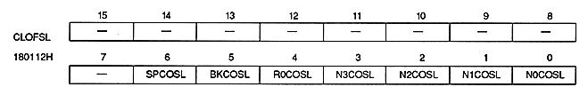

Color offset select bit
| N0COSL | 180112H | Bit 0 | For NBG0 (or RBG1) |
| N1COSL | 180112H | Bit 1 | For NBG1 (or EXBG) |
| N2COSL | 180112H | Bit 2 | For NBG2 |
| N3COSL | 180112H | Bit 3 | For NBG3 |
| R0COSL | 180112H | Bit 4 | For RBG0 |
| BKCOSL | 180112H | Bit 5 | For BACK |
| SPCOSL | 180112H | Bit 6 | For sprites |
| xxCOSL | Process |
| 0 | Use color offset A value |
| 1 | Use color offset B value |
When using the color calculation function, specify the color offset select bit on the screen on the top image side.